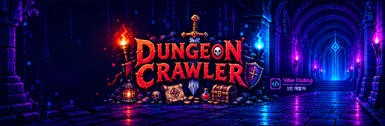

던전 크롤러 개발 블로그
친구들의 첫 플레이 피드백, 바로 고치기처음 해 본 친구들이 "뭘 해야 할지 모르겠다", "몇 대 맞고 죽는지 안 보인다", "장비 비교가 있었으면" 했어요. 처음 하는 사람 안내, 내 HP 막대, 장비 비교와 그림, 휴대폰 버튼 배치를 고치고, 디아블로처럼 겹쳐 보는 지도와 눌러서 자동으로 걷기를 더했어요.
몬스터가 움직이고, 기사가 장비를 입고, 마법이 터지다걷기·공격·막기·쓰러짐 움직임과 장비를 입는 기사, 파이어볼·프로스트 노바·체인 라이트닝 이펙트, 흡혈 초록 숫자, 몬스터를 넘는 점프, 옆에서 보는 점프 던전 사냥 맵 시험판, 그리고 옆에서 보는 마을 로비가 생겼어요.
던전 크롤러, 영어와 일본어를 배우다게임 전체를 영어·일본어로 옮기고, 장비 상자는 결제 웹훅을 받은 서버가 열어 우편함으로 보내요. 하루 끝에는 글자뿐이던 던전에 픽셀 그림을 입혔어요.
최고 조합 페이지, 파밍 룬워드, 그리고 첫 한정 판매장신구를 강화 가능한 수치로 바꾸고, 최고 조합 페이지와 아이템 발견을 만들고, 안 쓰이던 아이템을 살리고, 결제 창 개선과 첫 한정 판매까지 한 하루예요.
목걸이와 반지가 생기고, 숨은 힘 세 개가 사라진 날헬 50층 장비 조합을 시뮬레이션으로 찾다가 세트가 크게 밀리는 걸 발견하고, 그 원인을 장신구(목걸이·반지)로 풀어낸 하루예요.
장검에서 헬 던전까지, 가장 길었던 하루장검, 홈과 보석, 대장간, 룬과 룬워드에 이어 마지막 던전인 헬 던전과 네임드 보스, 유니크 아이템까지 만든 날의 기록이에요.
파이어볼, 프로스트 노바, 체인 라이트닝나이트메어에서 버는 골드를 늘리고, 스킬이 생기는 속성 세트 세 가지와 레전더리를 위한 전설의 힘을 만들었어요.
75층으로 줄이고, 나이트메어를 열다일반 던전을 75층으로 줄이는 대신 드롭을 크게 늘리고, 75층을 끝낸 사람을 위한 나이트메어 던전과 속성 시스템, 골드를 쓰고 모을 곳까지 만든 긴 하루예요.
로비와 거래소부터 v4, 150층까지밤샘으로 로비와 거래소를 열고, 서버 저장과 새 주소로 이사했어요. 첫 120층 랭커의 피드백과 시뮬레이션으로 규칙 v4와 최대 150층을 정한 긴 하루예요.
라이브 결제와 나만의 랭킹 서버직접 플레이하며 느낀 밸런스 문제를 고치고, 실제 결제를 켜고, 아이템을 시드로 다시 만들어 위조를 걸러내는 랭킹 서버를 세웠어요.
하루에 PR 열 개, 게임다운 게임으로로그인, 장비, 몬스터 20종, 경제, 모바일 조작, 랭킹, 상점까지 하루 만에 붙였어요. 작은 로그라이크가 진짜 게임의 모양을 갖춘 날이에요.
첫 삽, HTML 파일 하나로 만든 로그라이크던전 크롤러가 처음 태어난 날이에요. HTML 파일 하나로 브라우저에서 바로 도는 턴제 로그라이크를 만들었어요.